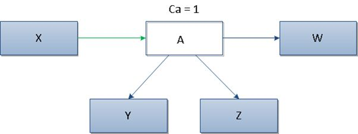

Afferent Coupling (Ca)
Afferent Coupling between packages (Ca) measures the total number of external classes coupled to
classes of a package due to incoming coupling (coupling from classes external classes of the package,
uses CBO definition of coupling). Each class counts only once. Zero if the package does not
contain any classes or if external classes do not use the package's classes.

In the picture above it can be seen that class A has only 1 incoming dependency (from class X),
that is why the value for metrics Ca equals 1.
High values of metric Ca usually suggest high component stability. This is due to the fact that the class
depends on many other classes. Therefore, it can’t be modified significantly because, in this case,
the probability of spreading such changes increases.
According to
Software Metrics: A Practical Guide for the Curious Developer. www.codacy.com/ebooks/guide-to-code-quality
preferred values for the metric Ca are in the range of 0 to 500.
Included in the set of metrics proposed by Robert C. Martin,
see
Martin, R. C. OO design quality metrics. An analysis of dependencies. 28 October 1994.
Martin, R. C. Agile Software Development: Principles, Patterns, and Practices.
Alant Apt Series. Prentice Hall, Upper Saddle River, NJ, USA 2002
- Highly Related Software Quality Properties
-
- Portability
-
is negatively influenced by attributes assessed with
Ca.
- Replaceability
- Parts of a system showing a high afferent
(ingoing) coupling from other system parts may be
highly inversely related to replaceability, since
other parts depend on it. Replaceability decreases
with increasing Ca.
- Related Software Quality Properties
-
- Functionality
-
is positively and negatively influenced by attributes
assessed with Ca.
- Interoperability
-
Parts of a system showing a high afferent
(ingoing) coupling to other system parts may be
directly related to interoperability, since they
are used/interacted with from other parts of the
system.
Interoperability decreases with increasing Ca.
- Security
-
Parts of a system showing a high afferent
(ingoing) coupling from other system parts may be
inversely related to security, since they can be
influenced in many ways from other parts of the
system.
Security decreases with increasing Ca.
- Reliability
-
is negatively influenced by attributes assessed with
Ca.
- Fault-tolerance
-
Parts of a system showing a high afferent
(ingoing) coupling from other system parts may be
inversely related to fault-tolerance, since a
local fault might be propagated to other parts of
the system.
Fault-tolerance decreases with increasing
Ca.
- Re-Usability
-
is positively influenced by attributes assessed with
Ca.
- Learnability
-
Parts of a system showing a high afferent
(ingoing) coupling from other system parts may be
directly related to learnability, since other
parts of the system using them serve as examples.
Learnability increases with increasing Ca.
- Operability for Reuse - Programmability
-
The part of a system that has a high afferent
(ingoing) coupling from other system parts may be
directly related to programmability, since other
parts of the system using it serve as examples.
Operability for Reuse - Programmability
increases with increasing Ca.
- Attractiveness
-
Parts of a system showing a high afferent
(ingoing) coupling from other system parts may be
directly related to attractiveness, since other
parts of the system use them might show a good
re-usability.
Attractiveness increases with increasing
Ca.
- Maintainability
-
is negatively influenced by attributes assessed with
Ca.
- Stability
-
Parts of a system showing a high afferent
(ingoing) coupling from other system parts may be
inversely related to stability, since other parts
are affected by them.
Stability decreases with increasing Ca.